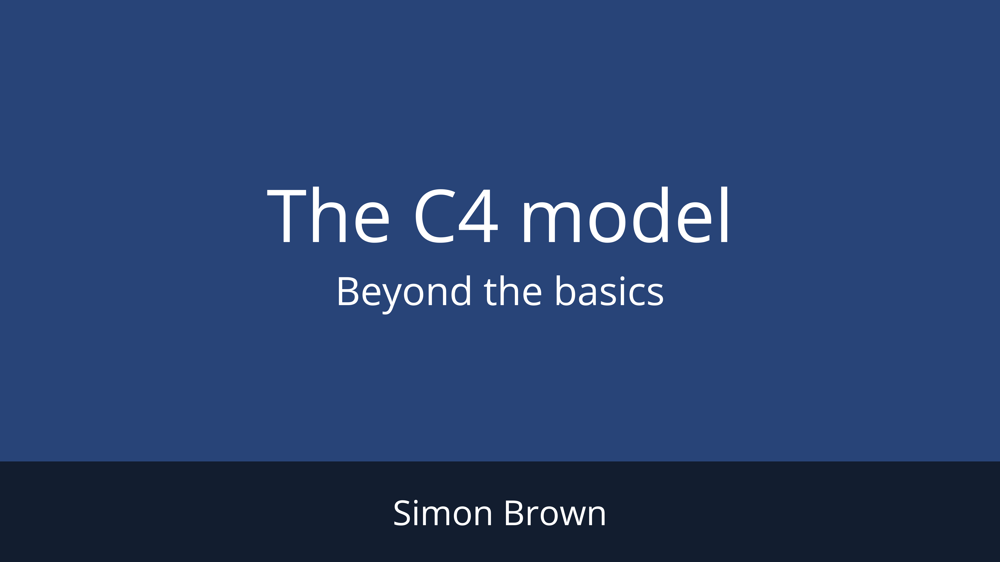
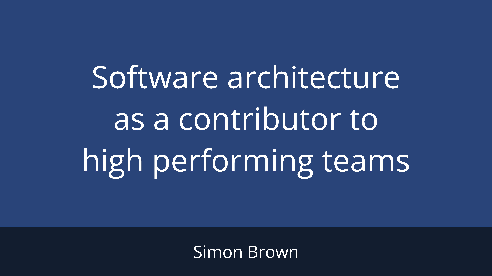

Simon Brown
Speaking
I speak at software development conferences, meetups and organisations around the world; delivering keynotes, presentations, training courses and workshops. In 2013, I won the IEEE Software sponsored SATURN 2013 "Architecture in Practice" Presentation Award for my presentation about the conflict between agile and architecture. Many of the conference talks that I've presented can be found on YouTube.
Public speaking schedule for 2026
The C4 model
It's very likely that most software architecture diagrams you've seen are a confused mess of boxes and arrows. Following the publication of the Manifesto for Agile Software Development in 2001, teams have abandoned UML, discarded the concept of modelling, and instead place a heavy reliance on conversations centered around incoherent whiteboard diagrams or shallow "Marketecture" diagrams created with Visio. Moving fast and being agile requires good communication, yet software development teams struggle with this fundamental skill. A good set of software architecture diagrams are priceless for aligning a team around a shared vision, and for getting new-joiners productive fast.
This talk explores the visual communication of software architecture, and is based upon years of experience working with software development teams large and small across the globe. We'll look at what is commonplace today, the importance of creating a shared vocabulary, diagram notation, and the value of creating a lightweight model to describe your software system. The content is based upon the "C4 model", which I created as a way to help software development teams describe and communicate software architecture, both during up-front design sessions and when retrospectively documenting an existing codebase. It's a way to create maps of your code, at various levels of detail, allowing you to tell different stories to different audiences.
Agile on the Beach 2019 - Falmouth, England - July 2019
Five things every developer should know about software architecture
The software development industry has made huge leaps in recent years, yet software development teams are often more chaotic than they are self-organising, with the resulting code being more of a mess than was perhaps anticipated. Successful software products aren't just about good code, and sometimes you need to step away from the IDE for a few moments to see the bigger picture. This session is about that bigger picture and is aimed at software developers who want to learn more about software architecture, technical leadership, and the balance with agility. This talk will debunk some of the common myths as we look at five things every developer should know about software architecture - a guide to modern software architecture that's pragmatic rather than academic and lightweight rather than "enterprisey”.
Jfokus - February 2024

The lost art of software design
“Big design up front is dumb. Doing no design up front is even dumber.” This quote epitomises what I’ve seen during our journey from “big design up front” in the 20th century, to “emergent design” and “evolutionary architecture” in the 21st. In their desire to become “agile”, many teams seem to have abandoned architectural thinking, up front design, documentation, diagramming, and modelling. In many cases this is a knee-jerk reaction to the heavy bloated processes of times past, and in others it’s a misinterpretation and misapplication of the agile manifesto. As a result, many of the software design activities I witness these days are very high-level and superficial in nature. The resulting output, typically an ad hoc sketch on a whiteboard, is usually ambiguous and open to interpretation, leading to a situation where the underlying solution can’t be communicated, assessed, or reviewed. If you’re willing to consider that up front design is about creating a sufficient starting point, rather than creating a perfect end-state, you soon realise that a large amount of the costly rework and “refactoring” seen on many software development teams can be avoided. Join me for a discussion about the lost art of software design, and how we can reintroduce it to help teams scale and move faster.
Agile meets Architecture - Berlin, Germany - September 2022

The C4 model - Beyond The basics
The C4 model for visualising software architecture has been gaining traction, with many organisations adopting it as their preferred way to document software architecture. Although C4 is relatively lightweight and straightforward, there are a number of common questions I hear asked on a regular basis. Join me for a tour of these topics, and hear my advice on how to model shared code, microservices, message-driven architectures, and more. I'll also share some insights into scaling the C4 model - both when diagramming larger software systems and when diagramming an entire system landscape.

The C4 model, Structurizr vNext, and AI
The C4 model provides engineering teams a shared language to describe software architecture at different levels of abstraction, and Structurizr is the reference implementation for that shared language. Whether you're new to C4 or have been using Structurizr for years, this session has something for you.
We'll start with a brief introduction to the C4 model to understand what the four levels are, why the hierarchy matters, and how to sketch your first diagrams. Next, a short introduction to Structurizr and how you can convert those hand-drawn diagrams into version-controllable Structurizr DSL, creating multiple diagrams from a single consistent model.
Familiar with the basics? The second half of the session will look at what's changed recently including Structurizr "vNext" and its new features. Finally, we'll look at the impact of AI, covering the common problems I see with AI-generated software architecture diagrams, how to fix them, and how to get better results from your AI agent if you do want to use it as a tool to assist with diagram generation.
Software architecture as a contributor to high performing teams
Software development has changed immeasurably since the creation of the agile manifesto, but attempts to optimise team performance will still fail if good engineering fundamentals are not in place. I've had the privilege of visiting hundreds of organisations over the past 15+ years, spanning almost every industry sector, in almost 40 countries. From startups and small country specific businesses, to scale-ups and global household names. Despite the huge leaps made in the industry, a number of recurring themes have emerged from my conversations with the engineering managers, CTOs, directors of architecture, etc I've met:
- We don't have a standard way to discuss our products from an engineering perspective.
- Our lack of documentation is slowing us down.
- It takes too long for new hires to be effective.
- We still have a gap between dev and ops because they are speaking different languages.
- Our product owners, testers, and domain experts don't fully understand what the engineers are building.
- Our teams are autonomous and decentralised, but we're missing the big picture.
- Technical debt is inhibiting our ability to move fast.
- Our engineering teams are not considering the trade-offs of the decisions they are making.
- We want to create an "architecture school" as a way to grow our engineers into tech leads.
In this session I'll share my insights and stories of reintroducing software architecture concepts to engineering teams across the globe, in a way that complements modern software engineering and contributes to building high performing teams.
Agile meets Architecture - Berlin, Germany - April 2025
